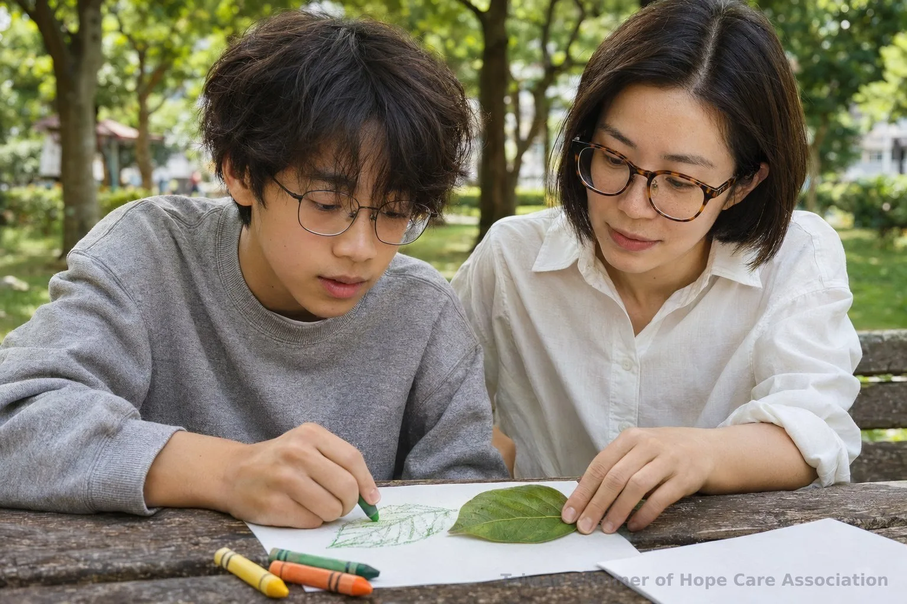
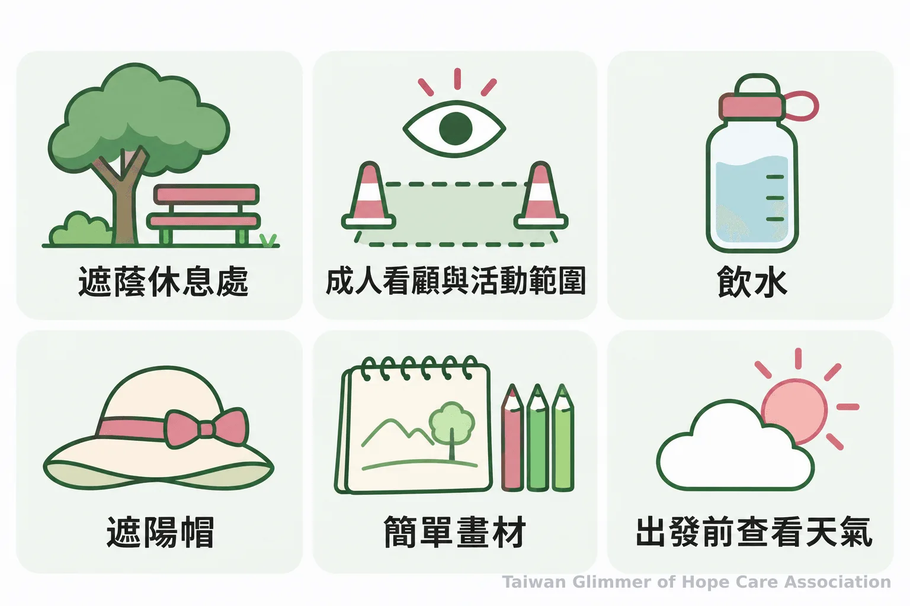
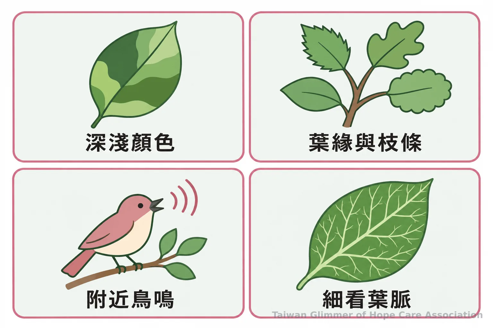

微光協會親子寫生怎麼帶？觀察、材料與安全
親子寫生不必追求畫得像。從挑選熟悉場地、準備輕便畫材，到用顏色和聲音陪孩子觀察，微光協會整理戶外活動的陪伴與安全做法。
【微光專欄｜在家也能做的藝術陪伴｜系列六之 4】
親子寫生可以從孩子選擇怎麼參與開始：拿畫筆描畫眼前景物、先觀察再開口分享，或暫時坐在一旁都可以。帶領者要準備的，是一個能安心停留、隨時休息的活動安排，也要給孩子決定看什麼、畫多少的空間。作品不必完成得像，戶外藝術活動的重點是一起觀察與創作。
寫生也不必走遠或準備繁複工具。找一處熟悉、方便休息的地方，留意天氣和看顧安排，再讓孩子挑選想觀察的事物。想延伸室內的陪伴方式，可以參考孩子畫畫時如何回應提問；走到戶外，則能把風、聲音、距離和光影也納入觀察。

一、先安排安全又方便休息的場地
選擇熟悉、可遮蔭且方便休息的地方，帶少量畫材、飲水和遮陽用品。出發前先約定活動範圍與集合方式，同行成人也要知道由誰看顧孩子。
住家附近有樹蔭、座位和方便休息的公園，就能開始。畫紙、墊板、鉛筆或蠟筆，加上收納袋，通常已足夠；年紀較小的孩子可由大人分裝材料，避免一次拿出太多。帽子、飲水和清潔用品也可放進袋中，依孩子年齡、場地和天氣調整。
戶外安全要和活動流程一起安排。先說明孩子可以活動的範圍，移動前彼此告知，並讓成人保持看得到孩子的位置。天氣炎熱時，盡量避開高溫時段，在樹蔭或涼亭休息，定時補水；如果天候不適合，就改期或轉到室內。衛生福利部國民健康署提醒兒童外出活動要「避開高溫、隨時留心」，也建議利用清晨或傍晚安排戶外活動，並在樹蔭或涼亭適度休息。
「避開高溫、隨時留心。」衛生福利部國民健康署提醒家長與照顧者，帶孩子外出活動時應留意高溫風險，並安排遮蔭與休息。

二、以感官線索展開戶外觀察
用開放式問題邀請孩子留意眼前細節，讓他自己決定要看什麼、怎麼畫。大人可以先分享自己的發現，不必把提問變成考試。
從顏色開始：「這裡有幾種綠？」再看形狀：「葉子邊緣是直的，還是彎彎的？」也能停下來聽一聽，附近有哪些聲音？若孩子想畫聲音，可以用點、線或顏色表示，不需要畫成大人認得出的物件。提問後稍等片刻，讓孩子有時間看；如果他想換一個角落，就跟著他的興趣移動。
家長或據點帶領者可以把活動分成短短幾段：先走一圈找景物，再坐下畫一會兒，之後喝水或休息。團體活動先講清楚集合處、活動範圍和移動方式。孩子也可以選擇只看、只說或休息。更多親近自然的活動點子，可參考孩子親近自然時的觀察與遊戲。

三、依孩子意願調整參與方式
親子寫生重點是陪孩子觀察和表達，不替作品訂標準。孩子可以畫一小部分、先看一會兒，也可以只用說的分享發現。
一片葉子上可能有深淺不同的綠，樹枝的影子也會隨著光線改變。大人可以問：「你想先看哪裡？」或「這裡有幾種顏色？」接著留一點時間讓孩子自己找答案。若他畫出大人意料之外的形狀，不必拿過畫筆修改；先描述看見的線條、顏色，再問孩子願不願意說說想法。
孩子若暫時不想畫，可以改成找不同形狀的葉子、聽周圍有哪些聲音，或挑一個喜歡的地方用話描述。參與戶外藝術不必交出完成品，也不必在同一時間做同一件事。這是一段共同觀察與創作的活動，不能把作品當成診斷或判定家庭狀況的依據，也不應將一般寫生說成治療。
四、收尾時尊重孩子分享作品的意願
讓孩子選擇分享、帶走或收起作品，並邀請他說一件今天注意到的事。完成與否、要不要給別人看，都由孩子決定。
收拾前可以問：「今天你最喜歡看哪個地方？」孩子可以回答，也可以不回答。若想拍照或展示畫作，先徵求孩子同意，並遮住姓名等個人資訊。大人描述觀察到的細節、肯定孩子願意嘗試，比評分或比較畫得像不像更能保留活動的自在感。
微光如何把藝術陪伴帶進在地據點
微光與已在照顧脆弱家庭孩子的在地單位合作，透過每月一堂藝術陪伴課，讓孩子有機會觀察與創作。目前三個據點分布於瑞芳、板橋與中壢。
台灣微光希望關懷協會從瑞芳愛鄰據點起步，與已經陪伴在地孩子的單位合作，把課程帶進社區；這種合作方式稱為「在地小衛星」。目前有瑞芳愛鄰、板橋明穗與中壢宣愛三個據點，各據點每月安排一堂藝術陪伴課。課程從藝術家作品帶出主題，不設標準答案，也不比較作品好壞。瑞芳曾以夏卡爾的「夢想花園」與「壓力怪獸」為課程主題。這些課程提供一起觀察與創作的機會，藝術陪伴不等於藝術治療，作品也不作為診斷或判定家庭狀況的依據。照片與紀錄，請見〈瑞芳愛鄰據點：跟著夏卡爾，飛進我的夢想花園〉。
- 先讓孩子選一個想看的角落，寫生不以完成或相似度評分。
- 出發前備妥簡單畫材、飲水與遮陽用品，說好活動範圍並安排成人看顧。
- 以顏色、形狀、聲音和細節引導觀察，也尊重孩子不畫、不回答或不分享的選擇。
若發現兒少安全疑慮，可撥衛生福利部 113 保護專線諮詢或通報；如有立即危險，請撥 110。113 為全年無休專線，警政署說明 110 是警察機關受理民眾報案的電話。
常見問題
Q1: 孩子幾歲可以開始親子寫生？
只要孩子有興趣，就能從看一看、指一指或用蠟筆塗畫開始，時間和材料依孩子狀況調整。
Q2: 第一次戶外寫生要帶哪些材料？
畫紙、墊板、鉛筆或蠟筆、收納袋，再加飲水和帽子即可；依場地與天氣增減用品。
Q3: 孩子畫得不像，需要幫他修改嗎？
先不要直接改畫，可以描述看到的線條或顏色，再問孩子是否想分享自己的想法。
Q4: 孩子不想畫，活動還能怎麼進行？
可以一起找顏色、看葉片、聽聲音或用口頭描述景物，觀察也是參與方式。
Q5: 戶外寫生要怎麼顧安全？
選方便休息的場地，由成人看顧並約定活動範圍；炎熱時避開高溫、安排遮蔭和補水，視天氣調整活動。
參考文獻
- 衛生福利部國民健康署（2026）。不怕秋老虎咬人 外出牢記「防熱4招」護兒童遠離熱傷害。https://www.hpa.gov.tw/Pages/Detail.aspx?nodeid=5020&pid=20339
- 衛生福利部保護服務司（2017，更新於2026）。113保護專線介紹。https://dep.mohw.gov.tw/DOPs/cp-1183-6499-105.html
- 內政部警政署（2025）。110 Report。https://www.npa.gov.tw/en/app/artwebsite/view?id=8018&module=artwebsite&serno=8de79b2b-17ff-4cfa-a9e1-7583d22b523f
本文同步刊於 appi.news。